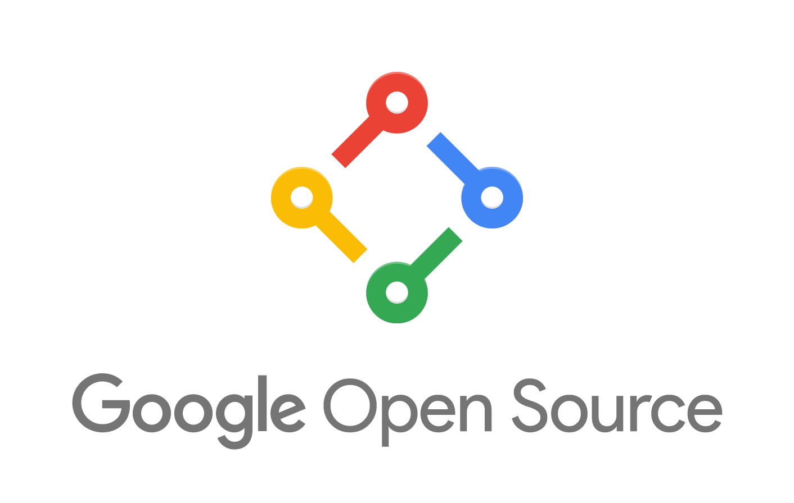

Wszystko o Linux'ie
Linux - rodzina uniksopodobnych systemów operacyjnych opartych na jądrze Linux. Linux jest jednym z
przykładów wolnego i otwartego oprogramowania jego kod źródłowy może być dowolnie wykorzystywany,
modyfikowany i rozpowszechniany. Od kwietnia 2017 roku Android (a tym samym Linux) oficjalnie jest
najpopularniejszym systemem operacyjnym na świecie.
Linus Torvalds, twórca jądra Linuks
Historia Linuksa rozpoczęła się w 1991 roku, kiedy to fiński programista, Linus Torvalds
poinformował na grupie dyskusyjnej Miniksa o hobbystycznym tworzeniu przez siebie niedużego, wolnego
systemu operacyjnego, przeznaczonego dla procesorów z rodzin i386 oraz i486.
Tworzę system operacyjny (tylko hobby, nie będzie wielki i profesjonalny jak gnu) dla klonów AT
na
386.
Linus stworzył jednak tylko jądro, pełny system operacyjny potrzebował jeszcze powłoki systemowej,
bibliotek itp.
W roli większości z tych narzędzi użyto oprogramowania GNU, co jednak w przypadku niektórych
komponentów systemu wymagało poważnych zmian, niekiedy finansowanych przez GNU, niekiedy
dokonanych już wcześniej przez Torvaldsa.
Dużo pracy wymagało także zintegrowanie systemu do postaci dystrybucji, które umożliwiały
zainstalowanie go w stosunkowo prosty sposób.
Gry a Linux
Obecnie na tylko jednego z Linuxów, w jednym sklepie jest ponad 192 187 aplikacji, z czego 15,5% to
gry (Linux Android). Sama liczba pobrań aplikacji przekracza 34 294 603 185. Jeśli chodzi o
pozostałe dystrybucje Linuxa to przykładowo 10 na 25 gier w „Popularnych” („Popular”) serwisu
GOG.com ma wersję na Linuxa. W serwisie Steam jest 2970 gier z potwierdzonym działaniem na Linuksie.
Istnieją także inne katalogi gier. Popularne „silniki” bądź biblioteki graficzne do tworzenia gier
pozwalają tworzyć duże i mniejsze produkcje na Linuxa - jak np. Unity czy SDL.
Najstarsza uniwersalna wyszukiwarka opisów gier, w rankingu liczby gier na lata 2010-2018 podaje dla
Linuxa 11 369 tytułów, podczas gdy dla konkurencyjnych platform jest ich co najmniej kilkakrotnie
mniej.
Linux współcześnie obsługuje też bez dodatków zazwyczaj więcej kontrolerów niż wiele znanych
systemów. Nie tylko nadal wspiera tzw. GamePort, ale również najnowsze kontrolery Sony.
Proton czyli wielki ukłon w stronę Linux’a
Proton jest zmodyfikowaną wersją Wine. Narzędzie to powstało we współpracy z firmą CodeWeavers.
Posiada ono natywną obsługę Steamworks oraz OpenVR. Natomiast implementacja DirectX 11 i 12 została
przeprowadzona z użyciem Vulkan’a. Poprawiona została również obsługa trybu pełnoekranowego, która
nie wymaga już stosowania wirtualnych pulpitów. Valve zadbało również o poprawną obsługę wszystkich
kontrolerów współpracujących ze Steam’em. Poprawiono również wydajność gier korzystających z
wielowątkowości.
Z biegiem czasu będzie ona uzupełniana o kolejne tytuły. Jednocześnie firma zachęca graczy do
testowania narzędzia Proton i uruchomienia gier.
Kwestie prawne
Oprogramowanie dla Linuksa jest najczęściej otwarte i wolne. Duża część kodu typowej dystrybucji
jest objęta takimi licencjami jak GPL, LGPL, BSD i podobnymi.
Linux jest zastrzeżonym znakiem towarowym należącym do Linusa Torvaldsa. Prawa do niego są udzielane
przez Linux Foundation

Interfejs graficzny
Graficzny interfejs użytkownika GUI nie jest w Linuksie integralną częścią systemu operacyjnego,
lecz dodatkowym zbiorem programów. W zależności od stopnia zaawansowania i integracji użytych
rozwiązań, dostępne GUI możemy podzielić na małe menedżery okien oraz duże środowiska graficzne.
Małe menedżery okien
Tradycyjne GUI dla Linuksa bazuje na osobnym menedżerze okien, takim jak Fluxbox, FVWM,
Enlightenment lub Window Maker i zestawie najróżniejszych aplikacji, uruchamianych za jego pomocą.
Menedżer okien pozwala na kontrolowanie położenia i wyglądu okien indywidualnych aplikacji oraz na
interakcję z X Window System.
Zaletą korzystania z niezależnego menedżera okien jest prostota (z punktu widzenia programistów i
doświadczonych użytkowników) oraz szybkość i niezawodność ich działania. Ponadto w porównaniu z
dużymi środowiskami graficznymi takimi jak GNOME lub KDE, niezależne menedżery w mniejszym stopniu
angażują zasoby takie jak procesor, pamięć i miejsce na dysku twardym. Użytkownicy, którzy preferują
pracę w terminalu, chętnie pracują w minimalistycznych środowiskach graficznych; menedżer okien, sam
w sobie, ma im przede wszystkim zapewnić możliwość otwierania okien emulatorów terminali
komputerowych.
Duże środowiska graficzne
Używanie małych menedżerów okien staje się coraz mniej popularne wraz ze wzrostem większych
środowisk graficznych. Są to zintegrowane sposoby na wygodną pracę, które starają się zapewnić
interfejs równie łatwy w obsłudze, jak ten z Mac OS lub Microsoft Windows. Łączą one menedżer
okien z pakietem standardowych aplikacji, które są łatwe w obsłudze nawet z punktu widzenia
początkujących użytkowników.
Jednym z pierwszych rozpowszechnionych środowisk graficznych było CDE, które nie stało się popularne
na Linuksie ze względu na koszty i ograniczenia licencyjne. W 1996 powstało KDE, a po nim, w 1997
roku, GNOME. Xfce jest trochę mniejszym projektem, który również powstał w 1997 i skupia się na
szybkości i możliwości konfiguracji.
Obecnie rozwiązaniami dominującymi są GNOME i KDE, zazwyczaj instaluje się je standardowo na
systemach linuksowych. Każde z nich oferuje:
-
Dla programistów zestaw standardowych API oraz środowisko programistyczne
-
Dostępność w wielu językach i wsparcie dla tłumaczy
-
Możliwość dostosowania systemu do swoich potrzeb
-
Kompletne środowisko graficzne z zestawem potrzebnych aplikacji, takich jak menedżer plików,
przeglądarka internetowa, odtwarzacz multimediów, klient poczty elektronicznej, książka
adresowa, przeglądarka dokumentów PDF menedżer fotografii
Mimo iż oba te środowiska graficzne mają podobne cele, radzą sobie z nimi całkiem inaczej. KDE stara
się, aby aplikacje były jak najbardziej konfigurowalne, aby można było w nie ingerować i aby mogły
ze sobą w łatwy sposób kooperować. GNOME z drugiej strony, koncentrując się na kluczowych zadaniach
(zgodnie z filozofią making things just work), stara się, aby całość była jak najprostsza w
obsłudze. Każde z tych środowisk przyciąga inny rodzaj użytkowników i tworzy inną społeczność
deweloperów.